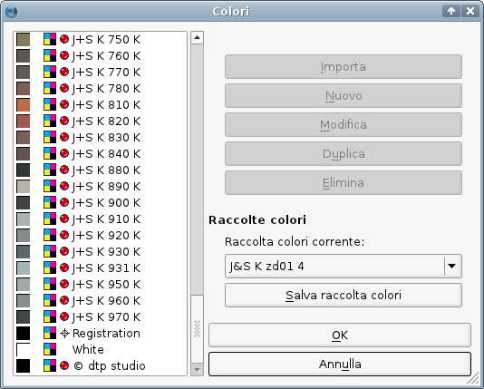

Le raccolte di colore descritte in questa pagina sono state donate dalla dtp studio Oldenburg, un'azienda specializzata in misurazione del colore e prodotti software per l'uso del colore. Tra essi citiamo Digital Colour Atlas, un software che contiene un numero molto maggiore di raccolte utilizzabili in Scribus, e altre utili caratteristiche come il calcolo dei colori per centinaia di sistemi di colore e tutti i relativi modelli di colore.
Ciò che rende particolarmente preziose queste raccolte è il fatto che i colori originali sono stati accuratamente misurati dai tecnici della dtp studio. A partire dai valori misurati, i tecnici hanno creato cinque diverse raccolte per ciascun insieme di colori, pensate per diversi utilizzi e supporti: da qui l'esistenza di cinque file per ciascun insieme di colori. I cinque supporti sono:
bs00.bs01.kd01.np01.zd01.Se vi chiedete il significato delle abbreviazioni, tenete presente che questi file sono stati creati da un'azienda tedesca. “bs” è un'abbreviazione per “Bildschirm” (monitor, schermo); “kd” significa “Kunstdruck” (stampa su carta patinata); “np” significa “Naturpapier” o “Normalpapier” (carta non patinata); “zd” è un'abbreviazione per “Zeitungsdruck” (stampa di giornali). Questo insieme di abbreviazioni deriva da convenzioni storiche, non dipendenti da dtp studio.
Sottolineiamo che è necessario installare i profili sopra indicati per utilizzare i colori in modo affidabile per lavori destinati alla stampa in quadricromia.
La dtp studio ha misurato un numero molto maggiore di sistemi di colore e ha creato le relative raccolte, che possono essere acquistate online. Per il futuro l'azienda ha intenzione di rendere le sue raccolte direttamente utilizzabili in Scribus, ma per ora potete ordinare le raccolte EPS e installarle come raccolte “di sistema” o “bloccate” seguendo le istruzioni generali.
Se avete bisogno di campioni di colore fisici per l'utilizzo nella stampa, potete anche acquistare un prontuario CMYK che copre l'intera gamma dei sistemi di colore misurati dalla dtp studio, e non solo la limitata selezione compresa in Scribus e descritta qui sotto.
|  |
| Nome | Fornitore | Descrizione | Numero di colori | Modello colore | Spot |
| Alligator Collection 3000 | www.alligator.de | Tipo colore: vernice; denominazione del fornitore: Alligator Collection 3000 Questo file potrebbe essere superato. Controllate palettes.de per aggiornamenti. |
208 | CMYK | sì |
| Alligator Collection 4000 | www.alligator.de | Tipo colore: vernice; denominazione del fornitore: Alligator Collection 4000 Questo file potrebbe essere superato. controllate palettes.de per aggiornamenti. |
121 | CMYK | sì |
| BannerRite | H. BRUNNER GmbH | Tipo colore: tessuto poliestere; denominazione del fornitore: BannerRite | 9 | CMYK | sì |
| Baumann System Prase | Paul Baumann, Aue, Sachsen | Tipo colore: n.d.; denominazione del fornitore: n.d. Il “Baumanns Neue Farbtonkarte, System Prase” è un vecchio sistema di colori, sviluppato dal pittore Otto Prase, che fu pubblicato per la prima volta nel 1912 da Baumann, un produttore di vernici della Sassonia. Comprende i colori e le loro miscele, oltre a molte informazioni cul colore e sulla cromatica, ed è la base per molti sistemi di colore moderni. |
1372 | CMYK | sì |
| Colortrend Wood Stains | Evonik Industries - Colortrend B.V. | Tipo colore: coloranti per legno; denominazione del fornitore: Colortrend Wood Stains | 46 | CMYK | sì |
| DEUTSCHEpapier | Deutsche Papier Vertriebs GmbH | Tipo colore: colore per carta; denominazione del fornitore: Trendcolor, Colorline, Paradiso | 65 | CMYK | sì |
| DRAKA POLYA | Tipo colore: n.d.; denominazione del fornitore: n.d. | 71 | CMYK | sì | |
| GS Palette 141 Kunstdruck | Druckfarbenfabrik Gebr. Schmidt GmbH | Tipo colore: inchiostro, denominazione del fornitore: n.d. | 450 | CMYK | sì |
| GS Palette 141 Naturpapier | Druckfarbenfabrik Gebr. Schmidt GmbH | Tipo colore: inchiostro, denominazione del fornitore: n.d. | 150 | CMYK | sì |
| Heidelberger ip Oberputze | HeidelbergCement AG | Tipo colore: intonaco; denominazione del fornitore: ip upper plaster | 130 | CMYK | sì |
| ispo 840 | Ispo Putz- u. Farbenwerk GmbH & Co. KG | Tipo colore: vernice; denominazione del fornitore: ispo 840 | 840 | CMYK | sì |
| ispo 2001 | Ispo Putz- u. Farbenwerk GmbH & Co. KG | Tipo colore: vernice; denominazione del fornitore: ispo 2001 | 400 | CMYK | sì |
| J&S K | Jänecke+Schneemann Druckfarben GmbH | Tipo colore: inchiostro; denominazione del fornitore: J+S Coated Paper Nota: i colori di questa raccolta sono identici a quelli della HKS K, con la differenza che ogni numero è preceduto da uno zero. Esempio: “J+S K 010 K” è equivalente a “HKS K 1K”. Colori J+S aggiuntivi non presenti nella raccolta HKS sono identificati con l'aggiunta di un “1”, ad esempio “J+S K 121 K”.) Se avete bisogno di altre varianti dell'insieme di colori HKS (ad esempio HKS N), ma non li trovate nel sito HKS, potete controllare se palettes.de fornisce gli equivalenti J+S, oppure potete considerare l'acquisto di Digital Colour Atlas. |
98 | CMYK | sì |
| kera Colour Line | Tipo colore: n.d.; denominazione del fornitore: n.d. | 190 | CMYK | sì | |
| KOBRA | Spraytec Group | Tipo colore: vernice; denominazione del fornitore: KOBRA | 52 | CMYK | sì |
| Koessinger Keramik-Druck | Kössinger AG | Tipo colore: inchiostri per stampa su ceramica; denominazione del fornitore: Koessinger Keramik-Druck | 72 | CMYK | sì |
| Oracal 451 | ORAFOL-Klebetechnik GmbH | Tipo colore: lamine metalliche; denominazione del fornitore: Oracal Series 451 | 19 | CMYK | sì |
| Oracal 6510 | ORAFOL-Klebetechnik GmbH | Tipo colore: lamine metalliche; denominazione del fornitore: Oracal Series 6510 | 7 | CMYK | sì |
| OSMO Einmallasur | Osmo Holz und Color GmbH & Co.KG | Tipo colore: vernici per legno; denominazione del fornitore: n.d. | 14 | CMYK | sì |
| PRB Color | PRB | Tipo colore: vernice; denominazione del fornitore: n.d. | 45 | CMYK | sì |
| Sericol UCG Leuchtfarben | Fujifilm Sericol Deutschland GmbH | Tipo colore: inchiostri e tinte fluorescenti; denominazione del fornitore: Universal Colour Guide | 10 | CMYK | sì |
| Sericol UCG MatchingSystems | Fujifilm Sericol Deutschland GmbH | Tipo colore: Seritone Matching System; denominazione del fornitore: Universal Colour Guide | 10 | CMYK | sì |
| swedex | SWEDEX | Tipo colore: rilegature in cartone; denominazione del fornitore: Master-bind | 41 | CMYK | sì |
| TAG Farbe erleben | Tipo colore: n.d.; denominazione del fornitore: n.d. | 160 | CMYK | sì |